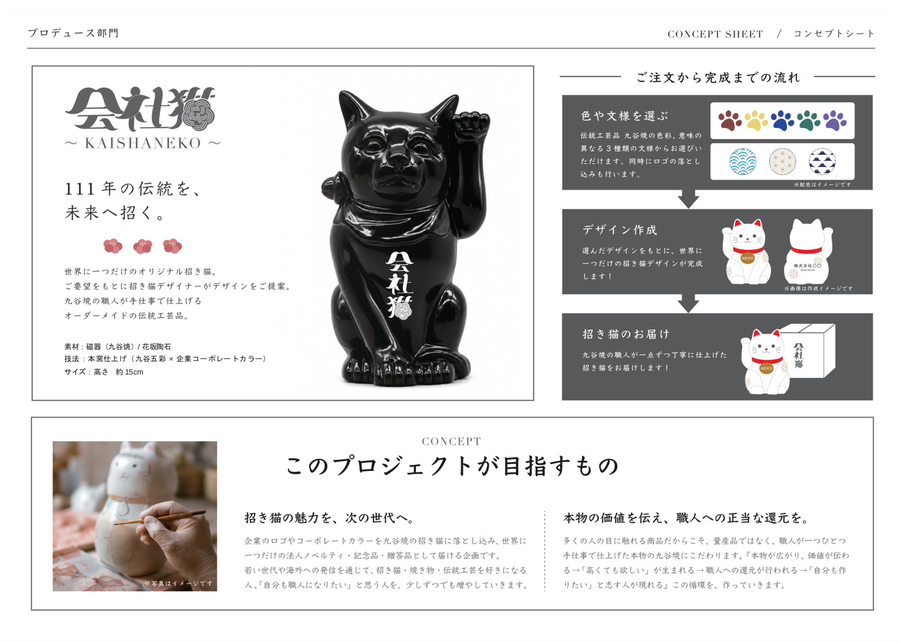

Hydration
Solace Replenishing Hand Serum
Niacinamide-rich lightweight serum that restores softness and luminosity.
$38
Reference
The concept sheet is shown below as a static image preview.

Featured
Hydration
Niacinamide-rich lightweight serum that restores softness and luminosity.
$38
Body
A gentle gel cleanser with citrus, woods, and herbaceous notes.
$42
Travel
Compact essentials suited for movement, flights, and overnight stays.
$56
Editorial
Each formulation is developed with careful attention to texture, aroma, and finish. The result is a measured, sensory experience that feels purposeful from first application to final touch.
Read our philosophy"A quiet ritual can become the most grounding part of a day."
About
Our spaces and products are built to blend naturally with daily life while respecting local character, material honesty, and long-term use.
Contact
For product guidance, gifting, and wholesale inquiries, our team is available throughout the week.
hello@kaishaneko.comMade in Japan
石川県の伝統工芸「九谷焼」。 受け継がれてきた技と美意識を大切に、 一つひとつ丁寧に仕上げています。
Handcrafted by Kutani-yaki artisans in Ishikawa, Japan.